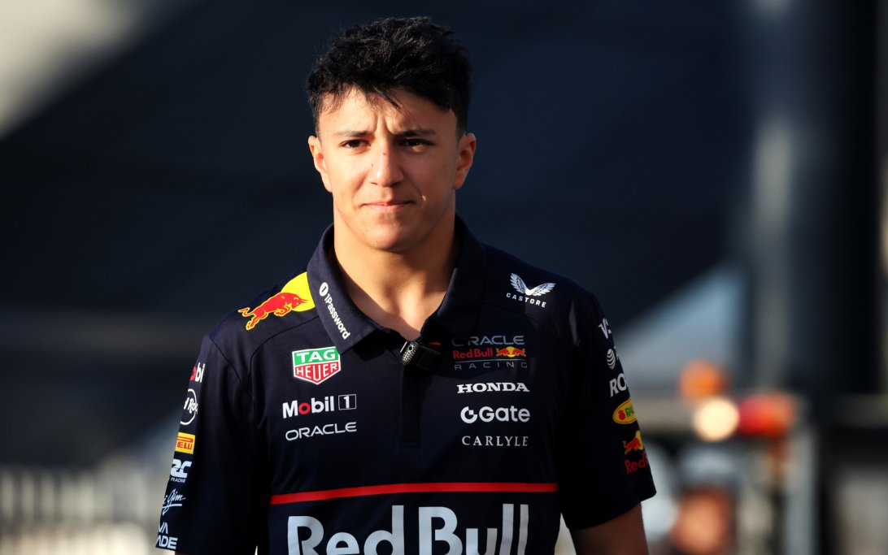
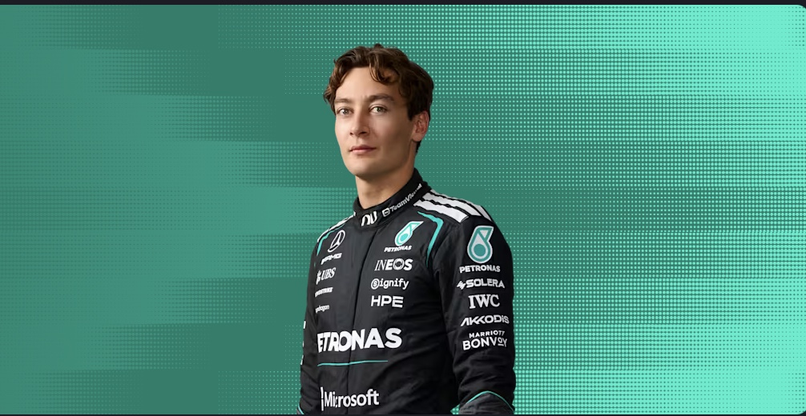
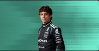
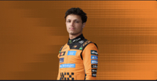
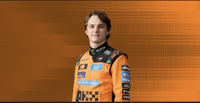
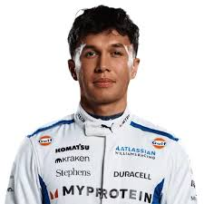

You can't change what happend, But you can change what will happen - Sebastian Vettel
Welcome to Box Notes! My website will be a helpful guide to help those who are new to the sport or
who simply need a refresher on all the rules and regulations that come with the sport. First up
is the drivers:
I hope that the website will help those gain more knowledge on the sport so they can
speak freely about it without being judged by those who seem to know so much. Considering that this sport can
be fairly judgemental towards other fans (as with any other sport) many people may feel that
they cannot express their love for the sport in fear of being questioned about topics that they
don't know about yet, meaning that they would be listed as a fake fan.
Formula 1 has recently become one of the most viewed sports since 2021 since the on-track battles between drivers Max Verstappen and Lewis Hamilton. The sport has always been popular but it has received more media time recently causing lots of new fans and love for the sport.
As someone who has only properly started watching and learning about Formula one since around 2020,
and still has to google a few things about the sport, I understand how difficult it is to raise
an opinion and then feel scrutinised because I don't know all of the deep facts on that topic.
Which is why i will also include facts on:
What each tyre type means and when it is best to use them
What each part of the car does to help the team gain some points
Tips on each track every weekend
These facts seem to be forgotten quite a lot when i hear people talk about the sport, it may just be because they are not sure about the topics or just because they don't think they really matter. Which is wrong because it's not just the drivers causing the wins, but it's the car as a whole that drives them forward and when it comes down to it, if you have a bad car then it will be tough to get the results the team wants.
I want my website to be a safe place for those to come and learn so they can impress
those who scrutinised them. But I don't want them to only learn from my website because of that.
I want them to visit this site because they have a genuine interest in the sport and want to
support whoever they want without judgement.
The Drivers
There are 20 drivers on track, mostly every season we get some rookies from F2 who have earned their way into F1. Every driver has to train everyday from a very young age just to get into F3
They also may seem like intense rivals on track but in reality most of them are very good friends off track. So here are a few facts about each one for the 2026 season:
Red Bull Racing
Max Verstappen
Four World Championships from 2021 - 2024
Races for Red Bull racing
Dutch Racer
Partner is Kelly Piquet
Isack Hadjar

Races for Red Bull Racing
Rookie season was with Visa Cashapp in 2025
Known for his rapid rise through F4, F3, and F2
French driver
Mercedes
George Russell

British driver
2021 F1 Rookie of the Year
Has a strong relationship with Max Verstappen
Known for his aggressive driving style and consistency
Kimi Antonelli

Italian driver
2025 F1 Rookie of the Year
Known for his smooth driving style and technical feedback
Has a strong relationship with George Russell
Ferrari
Charles Leclerc
Monegasque driver
2018 F2 Champion
Known for his aggressive driving style and qualifying pace
Has a strong relationship with Carlos Sainz
Lewis Hamilton
British driver
7-time World Champion
Known for his exceptional driving skills and longevity in F1
Moved to Ferarri from Mercedes in 2025
McLaren
Lando Norris

British driver
2019 F2 Champion
Known for his smooth driving style and strong racecraft
Won his first world championship in 2025
Oscar Piastri

Australian driver
2021 F2 Champion
Known for his technical feedback and adaptability
Best rookie so far in 2025
Williams
Alex Albon

Thai-British driver
2018 F2 Champion
Known for his aggressive driving style and strong qualifying performances
Has a strong relationship with Lando Norris
Carlos Sainz
Spanish driver
2019 F2 Champion
Known for his aggressive driving style and strong racecraft
Known for his strong performance in wet weather conditions